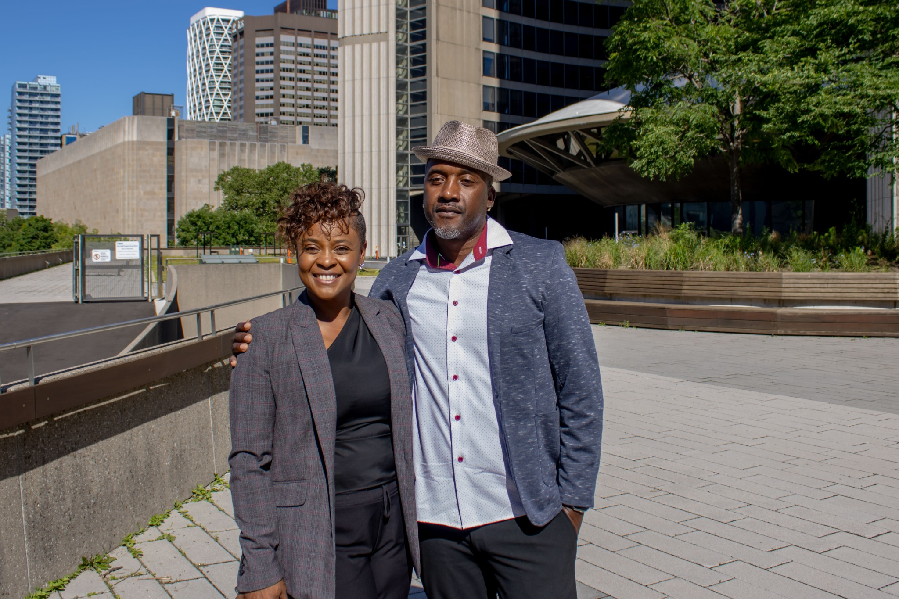

I’m Marsha Clyne, Founder and Principal Consultant of True Impact Philanthropy.
For nearly 15 years, I’ve worked across fundraising, philanthropy, communications, partnerships and nonprofit leadership — helping organizations strengthen donor relationships, develop partnerships, build fundraising strategies and create the infrastructure required for sustainable growth.
My experience spans major gifts, corporate partnerships, grants, sponsorship, legacy giving, donor stewardship, campaign strategy, fundraising operations, board and stakeholder engagement, communications, team leadership and national fundraising strategy.
Fundraising is connected to leadership. It is connected to communications. It is connected to your board. It is connected to reputation. And above all, it is connected to relationships.
That is why my approach looks beyond the immediate fundraising target and asks a bigger question:
What needs to be built inside this organization so that fundraising becomes stronger next year, and the year after that?
I hold a Master’s in Philanthropy and Nonprofit Leadership from Carleton University, along with an Honours degree in Peace and Conflict Studies.
My work combines academic understanding with years of hands-on experience working directly with donors, executives, boards, volunteers, communities and institutional partners.
It deserves a strategy capable of sustaining it.